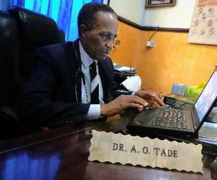
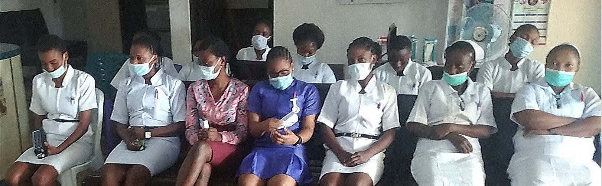
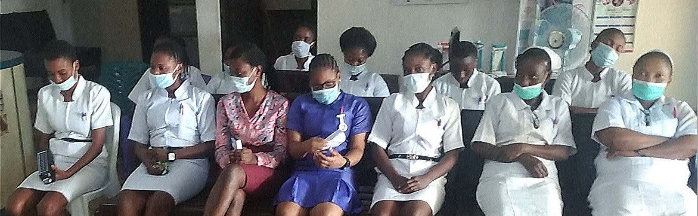

About us

Meet our founder and medical director Dr. Adeyemo O. Tade MBChB, DMP, FAGP
To the thousands of patients he has treated over the years, Dr. Tade embodies the combination of knowledge, skill, and compassion. He is a general physician with more than 40 years of experience devoted to the medical and surgical care of the whole family. He received his medical degree from the University of Ibadan, Medical School in 1977.
Amongst other past leadership roles, he was the president of the Association of General and Private Medical Practitioners of Nigeria (AGPMPN) from 2006 to 2010, and pro tem secretary of the World Organization of Family Doctors, (WONCA) Africa region from 2007 to 2010. He has been the Chairman of the Audit Committee of the Ondo State branch of the Nigerian Medical Association, NMA, for more than three decades.
Dr. Tade is known for his expertise, service to the community, and contributions to the medical society. He is the recipient of many awards and recognitions including the ‘Fellow of the Association of General Practitioners’, (FAGP), and the ’Distinguished Medical Practitioner’ (DMP) awards conferred by the AGPMPN, and the 'long service Award' conferred by the NMA. He was admitted into Ondo State NMA 'Roll of Honour' in 2004.
Dr. Tade has also made several contributions to the advancement of the public health goals of Ondo State, for instance, in the areas of mass immunization, family planning, and chronic disease prevention. His exemplary work ethic is reflected in the high quality of services provided at Ade-Tade Hospital.
Meet our matron Mrs. Wemimo R. Tade, RN
Mrs. Wemimo R. Tade is a registered nurse/midwife and retired principal nursing officer. She has over 40 years of nursing experience and attained the highest level of core clinical and administrative responsibilities before retiring from civil service.

In addition to her wealth of experience in all areas of clinical nursing, she has special training and is passionate about reproductive health. She is also an advocate for self-sustainability as an important ingredient for women’s health. As part of our women’s health program, she provides counseling for self-empowerment.
When she is not busy in the hospital, you might find her farming or teaching classes on small-scale agriculture and entrepreneurship.
Our Staff
 
